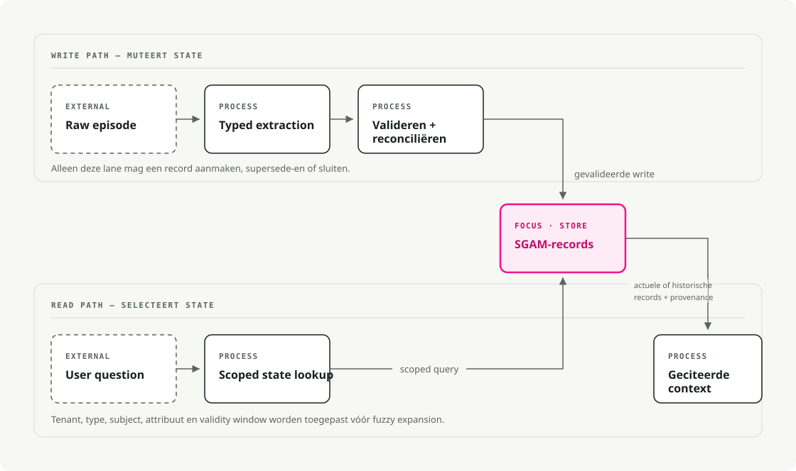

Automatische vertaling
Dit artikel is automatisch vertaald vanuit de oorspronkelijke Engelse versie.
AI-agentgeheugen: schema-gestuurde getypeerde toestand voor langlopende systemen
Langlopende agenten falen vaak door verouderde gegevens. Het systeem onthoudt een waarde, maar vergeet de update die deze heeft vervangen.
Stel je voor dat er een assistent is die een gebruiker genaamd Mira bedient. In een van de gesprekken zegt Mira dat de deadline voor haar paspoort op 15 juli ligt. Later corrigeert ze dit naar 30 juni. Een vectorzoekopdracht kan beide uitspraken vinden, maar een geheugensysteem moet ook vastleggen dat de tweede uitspraak de eerste heeft vervangen.
Kort samengevat: Beschouw het duurzame geheugen van agents als een getypeerde toepassingsstate. Haal potentiële gegevens uit het geheugen via een grens voor gestructureerde uitvoer, sla de records op met reikwijdte per gebruiker, geldigheidsintervallen, mogelijkheden tot vervanging, herkomstinformatie en schema-versienummers, en haal vervolgens het meest actuele deel op tijdens het lezen. Gebruik vectorsearch voor vage zoekresultaten, maar beschouw de rangschikking ervan niet als autoriteit voor wijzigbare feiten.
De valkuil van het contextvenster
Het contextvenster is de invoer die beschikbaar is voor één modelaanroep. Een applicatie kan berichten overdragen naar latere aanroepen, maar het model beslist niet welke oude feiten nog geldig zijn of wie ze mag zien.
Langlopende agents moeten voorkeuren, taakstatussen, klantgegevens, beslissingen over tools, nalevingsnotities en eerdere fouten onthouden. De gemakkelijkste manier is om samenvattingen toe te voegen of oude notities in een vectorstore op te slaan. Dit werkt zolang geen van de opgeslagen feiten verandert.
Nu heeft de agent twee vervaldatumken voor paspoorten, twee gewenste formaten of twee beslissingen met betrekking tot projecten. Semantische zoekfuncties kunnen beide ophalen. Een samenvatting kan er één overschrijven. Een uitgebreide context kan het verouderde item naast het actieve item opnemen. Deze ontwerpen kunnen tekst oproepen, maar ze kunnen niet bepalen welke waarde actueel is.
Het contract moet concrete vragen beantwoorden:
- Wat is nu waar?
- Wat was er op 2 juni waar?
- Wie heeft dat gezegd?
- Bij welke huurder hoort het?
- Welk oudere feit is door dit feit vervangen?
- Kan ik het verwijderen of laten vervallen?
Schema-Guided Agent Memory (SGAM) slaat deze antwoorden op als velden en relaties, in plaats van ze impliciet in proza achter te laten.
Wat SGAM betekent
Er komen drie vergelijkbare namen voor in dit onderwerp, maar ze verwijzen naar verschillende concepten.
Schema-Guided Dialogue (SGD) is het taakgerichte dialoogdataset van Google uit 2019. Het schema beschrijft service-API’s, intenties en slots zodat een dialoogmodel de staat van diensten die het nog nooit heeft gezien, kan bijhouden. Het is een nuttig voorbeeld, maar het gaat om dialoogservices in plaats van duurzame agentmemorie.
Schema-Guided Memory (SGM) is de onderzoeksterm die door Mei et al. wordt gebruikt in According to Me: Long-Term Personalized Referential Memory QA. In het artikel worden vrijetekstuele Descriptive Memory (DM)-items vergeleken met key-value-memoriestukken met een vast schema. De broninformatie blijft hetzelfde; alleen de representatie verandert.
In dit artikel gebruik ik Schema-Guided Agent Memory (SGAM) om een ingenieurspatroon aan te duiden waarin schema’s de schrijving, update, opvraag en verwijdering sturen. Het schema definieert de toepassingsstaat, in plaats van slechts een notitie te formateren.
ATM-Bench laat zien waarom de representatie belangrijk is. Het maakt gebruik van ongeveer vier jaar aan persoonlijke gegevens uit e-mails, afbeeldingen en video’s. De vragen vereisen persoonlijke referenties, locatie, meerdere bewijzen en updates in de tijd. De prestaties dalen bij de moeilijke splitsing, terwijl SGM zich verbetert ten opzichte van DM omdat de retriever velden zoals tijd, bron, locatie, entiteiten en tags rechtstreeks kan verwerken.
SGM versus DM beantwoordt een opslagvraag: moet het geheugen als vrije tekst blijven, of moeten er genummerde velden worden gebruikt? Een productieagent heeft nog een probleem voordat de gegevens worden opgeslagen. Hij moet vanuit een ongestructureerde conversatie tot een voorgestelde geheugensupdate komen. Schema-Guided Reasoning (SGR) definieert die beslissingsweg: onderzoek de bewijzen, identificeer het onderwerp en het attribuut, controleer of het feit de huidige staat verandert, en stel vervolgens een kandidaat voor een schrijfoperatie op. SGAM past de opslag- en levenscyclusregels toe na die modelaanroep.
SGR is de poort tot schrijven
Structured Output (SO) zorgt ervoor dat het kandidaatobject de juiste vorm heeft. Schema-Guided Reasoning (SGR) gaat nog een stap verder door de stappen en volgorde die het model moet volgen om tot die kandidaat te komen, te coderen. Schema-Guided Agent Memory (SGAM) neemt het over na de modelaanroep en beheert de kandidaat als een duurzame staat.
Ik heb meerdere keren over SGR geschreven. Het originele vLLM en XGrammar artikel de mechanisme werden behandeld. In latere artikelen werd dit toegepast op gestructureerde beoordelaars, planners en routers, en Reproducibele RAG-rubriekenIn elk geval beschreef het schema zowel de tussentijdse redeneringsvelden als de uiteindelijke beslissing. Structured Output zorgde er tijdens het decoderen voor dat dit schema werd nageleefd.
Een oordeel, route of plan vervalt meestal samen met de huidige aanvraag. Een volgende uitvoering kan enkele dagen later een geheugeninformatie ophalen of deze gebruiken om een toolaanroep te kiezen. Deze langere levensduur vereist opslagregels die door SGR niet worden geboden.
SGR beperkt één modelaanroep door de redeneringstopologie ervan te definiëren. Voor een schrijving in het geheugen kan het schema bronbewijs, een genormaliseerd onderwerp en attribuut, een vergelijking met de huidige staat vereisen, en pas daarna de voorgestelde update. Pydantic of JSON Schema beschrijft deze werkwijze. Provider-native Structured Output of een geadviseerde decoderingsomgeving zoals XGrammar voorkomt dat het model velden overslaat of een andere structuur retourneert.
Dit garandeert niet dat de conclusie correct is. Het maakt de vereiste beslissingsweg echter expliciet en controleerbaar, in plaats van een definitief object te accepteren zonder duidelijkheid over de manier waarop het model tot die conclusie is gekomen.
SGAM bepaalt wat er gebeurt nadat dat object is gegenereerd. Moet het worden opgeslagen? Vervangt het een oudere feit? Welke gebruiker kan het zien? Is het actueel of historisch? Welk brondocument ondersteunt het?
Alle drie maken gebruik van schema’s, waardoor ze gemakkelijk verward kunnen worden met één enkele mechanisme. Ze werken op verschillende lagen: SO beheert de gegenereerde vorm, SGR definieert de route van bewijs naar beslissing, en SGAM controleert de gecachte staat.
| Dimensie | SO | SGR | SGAM |
|---|---|---|---|
| Doel | Geef een object terug dat voldoet aan een schema. | Leid het model langs een vooraf gedefinieerde redeneringsweg | Beheer het duurzame geheugen na de modelaanroep |
| Reikwijdte | Eén gegenereerde reactie | Eén redenerings- en besluitvormingspad in een modelaanroep | Gegevens die worden gebruikt tussen oproepen, sessies en uitvoeringen |
| Schema-rollen | Definieert de uitvoervelden, typen en toegestane waarden | Definieert de tussentijdse redeneringsstappen en de uiteindelijke beslissing. | Definieert opgeslagen records, relaties en het levenscyclusbeheer |
| Handhaving | Constrained decoding blocks genereren een schema-ongeldige uitvoer | Gebruikt SO om elke gedeclareerde fase en de uiteindelijke beslissing te vereisen. | Validatie van de applicatie, databasebeperkingen en conflicterulen |
| Levensduur | De huidige oproep, tenzij de applicatie het object opslaat | De redeneringstrace wordt meestal verwijderd nadat de beslissing is genomen. | Blijft bestaan totdat het wordt bijgewerkt, verlopen is of verwijderd wordt |
| Foutmodus | Geldige vorm met de verkeerde betekenis | De vereiste stappen zijn aanwezig, maar de redenering kan nog steeds onjuist zijn. | Verouderde, vervuilde, niet-gescopeerde of niet-naar-te-volgen toestand |
Op de schrijfweg is de volgorde als volgt:
SGR reasoning schema + Structured Output -> candidate write -> SGAM policy and persistence
SGR stuurt het model via het vooraf gedefinieerde extractie- en beslissingspad. Structured Output zorgt ervoor dat dit pad wordt gevolgd en genereert de resultaten. MemoryDelta object. Vervolgens voert SGAM tenantcontroles uit, past een conflictpolitiek toe, houdt rekening met geldigheidsperioden, bronverantwoording en retentiebeleid voordat het de delta committ.
Het volgende illustratieve fragment uit memory_models.py definieert het object dat vanuit de extractie wordt doorgegeven aan de SGAM-schrijfservice:
from datetime import datetime
from pydantic import BaseModel, Field
class MemoryDelta(BaseModel):
tenant_id: str = Field(description="Isolation boundary, e.g. acme")
subject: str = Field(description="Normalized entity ID, e.g. mira")
attribute: str = Field(description="Property being updated")
value: str = Field(description="New value")
valid_from: datetime
source_episode_id: str
MemoryDelta vangt op wat het model heeft geëxtraheerd. De SGAM-schrijfservice beslist nog steeds of deze gegevens moeten worden afgewezen, gecombineerd of opgeslagen.
De twee workflows
SGAM beschikt over een schrijfweg en een leesweg. Alleen de schrijfweg wijzigt de opgeslagen staat. De leesweg selecteert de records voor de huidige aanvraag.
De ingesteldeworkflow is de schrijfweg:
- Vang een ruwe episode op uit berichten, resultaten van tools of bedrijfsgebeurtenissen.
- Extraheer getypeerde kandidaten via gestructureerde uitvoer.
- Valideer het schema en wees ongeldige invoeren af.
- Verzoen conflicten, sluit verouderde feiten af en bewaar de herkomstinformatie.
- Plaats het record in de SGAM-opslag.
De aanvraagworkflow is de leesweg:
- Begin met de vraag van de gebruiker.
- Bepaal of er behoefte is aan de huidige staat of aan een staat op een specifiek tijdstip.
- Filter op basis van tenant, geheugentype, onderwerp, attribuut en geldigheidsperiode.
- Voeg vector- of grafexpansie alleen toe wanneer een exacte staatsonderzoek niet voldoende is.
- Stel voor het model de kleinste mogelijke geciteerde context samen.

Lees die diagram van links naar rechts in twee banen. De bovenste baan schrijft geheugeninformatie op, en de onderste baan leest deze weer op. Beide maken gebruik van dezelfde opslag. text.
tenant_id
memory_id
subject
attribute
value
memory_type
schema_version
valid_from
valid_to
supersedes_memory_id
source_episode_id
confidence
retention_policy
Met deze velden kan een nieuwe vervaldatum voor een paspoort de vorige vervaldatum afsluiten zonder de historie te wissen. Dezelfde tabel kan zowel huidige als tijdsgebonden vragen beantwoorden, waarna het resultaat kan worden teruggeleid naar het desbetreffende oorspronkelijke incident. schema_version ondersteunt migraties, terwijl retention_policy geeft de verwijderingsjobs aan wat er nog meer moet worden verwijderd.
RAG haalt documenten op. SGAM behoudt een wijzibare toestand.
Vectorzoekopdrachten maken nog steeds deel uit van het systeem voor vage herinnering, clustering en uitbreiding. Maar de huidige waarde van mira.passport_deadline Het moet afkomstig zijn van een gescopeerd geheugenrecord, en niet van het willekeurige deel dat toevallig als eerste werd geselecteerd.
Een voorbeeld van een verouderde waarheid
Vergelijk twee weergaven van dezelfde episodes: een DM-basislijn en een SGAM-boekhouding.
e1: Mira prefers concise answers. Her passport deadline is 2026-07-15.
e2: Mira corrected the deadline. It is now 2026-06-30.
Een DM-baseline bewaart beide afleveringen als vrije tekst, zodat een tekstzoekopdracht resultaten kan teruggeven e1 omdat het de juiste woorden bevat. SGAM haalt een getypte feit uit elk episode, gecodeerd op basis van huurder, onderwerp en attribuut. Het moet dit teruggeven. e2 als huidige staat en behouden e1 voor een historische query.
De volgende functie is SGAM-write-path-code. Deze zou zich bevinden in een store-module zoals sgam_store.py. DM heeft geen equivalent omdat het geen actieve rij per attribuut bijhoudt. Voordat de aanroeper een vervanging invoegt, sluit deze functie de huidige rij:
def close_previous_fact(db: sqlite3.Connection, fact: MemoryFact) -> int | None:
row = db.execute(
"""
select fact_id
from memory_facts
where tenant_id = ?
and subject = ?
and attribute = ?
and valid_to is null
order by valid_from desc
limit 1
""",
(fact.tenant_id, fact.subject, fact.attribute),
).fetchone()
if not row:
return None
db.execute(
"update memory_facts set valid_to = ? where fact_id = ?",
(fact.valid_from, row["fact_id"]),
)
return int(row["fact_id"])
Wanneer e2 Wanneer dit wordt bereikt, stelt de functie in valid_to over het uit de gegevens gehaalde feit e1 naar e2de timestamp. De oproepende voegt vervolgens het nieuwe feit toe met een open valid_to. DM beschikt niet over een equivalente update-stap, waardoor de oude tekst nog steeds een hogere rang kan krijgen dan de correctie.
Het uitvoeren van huidige en historische deadline-query’s tegen beide representaties levert verschillende resultaten op:
Naive text memory:
returned episode: e1 -> passport deadline is 2026-07-15
SGAM current state:
mira.passport_deadline = 2026-06-30
valid_from=2026-06-03T10:00:00Z, source=e2
SGAM point-in-time state:
on 2026-06-02, mira.passport_deadline = 2026-07-15
In productie moet deze transactie worden gecombineerd met gestructureerde extrahering op de write-path. De databasetransactie actualiseert de tijdelijke geldigheid. Het model extrheert een kandidaatfeit, maar beslist niet welke opgeslagen rij nog actueel is.
Tooling-map
Projecten gebruiken verschillende benamingen voor onderdelen van dit patroon: geheugenspeichern, contextgrafieken, profielen, langetermijnopslag, graph RAG en stateful agents.
| Tool of framework | Hoofdopslaglaag | Tijdsbeheer | Schema-mechanisme | Praktische niche |
|---|---|---|---|---|
| Zep / Graphiti | Neo4j, FalkorDB, Neptune en ondersteuning voor de legendarische Kuzu | Hoog | Pydantic-entiteit en randtypen, temporele randen, herkomst | Tijdsgrafische geheugens |
| LangGraph / LangMem | LangGraph-opslag, opslag met Postgres-ondersteuning | Medium | JSON slaat op plus het extraheren van Pydantic-profielen of collecties | Agent-apps die al zijn gebouwd op LangGraph |
| Mem0 | Gemanageerde stack met Valkey / Redis / vector-backend in OSS-omgevingen | Medium | Geheugentypen, aangepaste categorieën, extractieprompten | Gebruikers-, agent- en sessiememory als dienst |
| Letta / MemGPT | Agent-toestand en geheugenblokken ondersteund door een database | Laag | Editbare gemarkeerde geheugenblokken | Statevolle agents met contextbeheer in OS-stijl |
| Cognee | Graph-, vector- en relationele backends | Medium | Ontologie-georiënteerde extractie en validatie | Onthouding van het enterprise-kennisgrafiek |
| LlamaIndex-eigenschapsgraf | Property graphstores en vectorstores | Laag tot gemiddeld | SchemaLLMPathExtractor met toegestane entiteiten en relaties |
Grafextractie uit documenten en tracegegevens |
Graphiti is een open-source implementatie van relationeel, temporeel geheugen voor betonstructuren. Het houdt bij hoe feiten veranderen, bewaart pointers naar de oorspronkelijke episodes en ondersteunt hybride zoekmethoden. LangGraph scheidt thread-checkpoints van opslagruimtes tussen threads. Mem0 presenteert geheugenoperaties als een beheerde dienst. Letta maakt gebruik van bewerkbare contextblokken in plaats van SGAM op veldniveau, maar behandelt de agentensamenstelling nog steeds als persistente gegevens.
Begin met het datamodel. Als de belangrijkste operatie bestaat uit het exact opzoeken van feiten, is een relationele tabel met JSON-inhoud, validiteitskolommen, tenant-indexen en een vector-sidecar meestal voldoende. Voeg een graafstructuur toe wanneer het doorlopen van relaties onderdeel is van het product, en niet omdat een demonstratie van de graafstructuur indrukwekkend oogt.
Volgorde van implementatie
Bepaal eerst wat het product mag onthouden. De keuze tussen grafiek en vector komt later.
Een supportagent kan zich het accountniveau, de openstaande gevallen en de permanente contactvoorkeuren herinneren. Hij moet echter niet elke gefrustreerde opmerking automatisch in een profielopslag zetten. Een codingagent kan zich de conventies van het repository en de onopgeloste taken herinneren. Hij moet geen privénotitie eeuwig bewaren alleen omdat die notitie één keer is opgehaald.
Begin met de schrijfweg en beschouw geheugen als een kleine staatswijziging:
- Geef de typen van het geheugen, het onderwerp, het tenantbereik en de retentieklasse een naam.
- Haal kandidaatrecords eruit met gestructureerde uitvoer.
- Valideer de payload met Pydantic of de schema-laag die je stack al gebruikt.
- Los conflicten op voordat je iets invoegt, inclusief bepalen of het nieuwe record het oude vervangt.
- Bewaar een bronpointer naar het originele incident, het hulpterresultaat, het bestand, het ticket of de bevestiging van de gebruiker die het record heeft gegenereerd.
- Schrijf de schemaversie bij elk record, in plaats van deze alleen in de applicatiecode te bewaren.
De eerste SGAM-opslag kan een relationele tabel zijn met een JSON-colom en enkele indexen. Een graf wordt nuttig wanneer het product relaties moet doorlopen, zoals klant-naar-account, account-naar-beleid, taak-naar-artefact of project-naar-beslissing.
Hot path en achtergrondschrijvingen
Onmiddellijke extrahering is de moeite waard wanneer de volgende actie afhankelijk is van het nieuwe geheugen. Als de gebruiker zegt “onthoud dat ik liever korte antwoorden heb”, hoeft het systeem geen nachtelijke verwerking te doen voordat het zich anders gaat gedragen.
De meeste omwisselingen vereisen geen onmiddellijke opslag. Sla het ruwe episoderegister op met metadata over de tenant, sessie en tool, en laat vervolgens een achtergrondwerksterkte later kandidaten extraheren. Met consolidatie gebaseerd op herhaling buffert de werkster zwakke signalen en promoot een feit pas nadat soortgelijke bewijzen zich herhalen of de gebruiker dit bevestigt. Dit zorgt voor vertraging in de actualiteit. Dat is acceptabel voor situaties waarin “de gebruiker vaak om CSV-exporten vraagt”, maar risicovol bij “de klant heeft het leveradres gewijzigd”.
Houd het leespad deterministisch. Handhaaf eerst de reikwijdte en geldigheid van de tenant, en gebruik vage zoekmethoden alleen wanneer deze nuttige context kunnen toevoegen.
- Filter op tenant, geheugentype en geldigheidsperiode.
- Haal eerst de exacte gestructureerde staat op, voordat semantische buren worden geraadpleegd.
- Gebruik vector- of grafexpansie voor ondersteunend bewijs, gerelateerde entiteiten en voorbeelden, niet als autoriteit voor huidige feiten.
- Stel samen de kleinste geciteerde context samen die de vraag kan beantwoorden.
Behandel schema-migraties als productwerk. Wanneer een geheugenrecord van vorm verandert, verandert ook het gedrag van de agent: wat hij kan herinneren, wat hij kan citeren, wat hij kan verwijderen, en welke oude feiten nog als actueel gelden. Houd migratiescripts, backfills, dubbele leesvensters en verwijderingsgedrag in hetzelfde releaseplan als de productwijziging.
Wanneer SGAM de complexiteit waard is
Gebruik SGAM wanneer feiten in de loop der tijd kunnen veranderen:
- Gebruikersvoorkeuren die kunnen worden bijgewerkt of ingetrokken
- Klant- of accountgegevens met vereisten voor audit
- Taakstatus voor langlopende assistenten
- Projectgeheugen van coding-agents
- Gedeeld staat tussen meerdere agents
- Compliancemerken waar de herkomst belangrijk is
- Tijdsgerelateerde vragen zoals “Wat geloofden we vóór de migratie?”
SGAM is overdreven wanneer het geheugen tijdelijk is, exploratief van aard of goedkoop kan worden opnieuw berekend. Als de agent slechts enkele opeenvolgende acties nodig heeft, zijn een checkpoint en een gereduceerde berichtgeschiedenis voldoende. Voor statische documentcontrole is mogelijk alleen RAG nodig. En wanneer het domein zo onstabiel is dat het schema elke dag verandert, zal getypt geheugen het team vertragen.
Evaluatiecontrolelijst
Het lezen van het eindantwoord is niet voldoende. Een geheugensysteem kan een plausibel antwoord genereren nadat het een verkeerde waarheid heeft opgeschreven, een verouderde informatie heeft opgehaald of een grens tussen tenants is overschreden.
Ik gebruik dezelfde stapsgewijze indeling als in mijn Artikel over de evaluatie van RAG. Meet de fase waarin een fout kan optreden, in plaats van de evaluatie te beperken tot de gegenereerde tekst. De trace-discipline uit het artikel over de evaluatie van agents Dit geldt ook omdat een geheugenfout vaak al verschijnt in het uitvoeringsverleden voordat deze de uiteindelijke oplossing bereikt.
Ik zou SGAM willen testen met replay. Voer een vaste reeks episodes in bij de geheugenopslagmodule, controleer het logboek na elke betekenisvolle zet, en stel vervolgens vragen over de huidige staat en het tijdstip tegenover de daaruit voortvloeiende opslag.
| Laag | De fout die u zoekt | Metingen |
|---|---|---|
| Schrijf extractie | De agent heeft een feit over het hoofd gezien, er eentje verzonnen, of een ongeldige vorm gegenereerd. | Schema-gewaarborgde schrijfsnelheid, extractieprecisie/herinneringsratio, dekking van bronafleveringen |
| Conflictbeheer | Een verouderde waarheid bleef actueel of een geldige oude waarheid werd overschreven. | Correctheid van supersensitiviteit, duplicatieratio, correctheid van invalidatie van verouderde feiten |
| Isolatie en beleid | Geheugenlek tussen gebruikers of het bleef actief na afloop van de toegestane tijdslimiet. | Falen bij tenantisolatie, correctheid van verwijdering, naleving van retentievereisten |
| Leesopname | Het juiste record bestaat wel, maar de lezer heeft het niet opgehaald. | Accuraatheid in de huidige staat, accuraatheid op een specifiek tijdstip, recall@k voor geheugenrecords |
| Antwoordverankering | Het antwoord maakte gebruik van geheugen zonder ondersteuning of verwees naar de verkeerde bron. | Vraag ondersteuning aan met betrekking tot oorspronkelijke episodes, de nauwkeurigheid van citaten en de correctheid van het conflictoplossingsproces. |
| Operaties | Het geheugenpad is te langzaam, te verouderd of te kostbaar. | p95-schrijflatenste, vertraging door ouder wordende gegevens, leeslatenste, kosten per query |
Benchmarks zoals LoCoMo, LongMemEval, en ATM-bench Stuur alstublieft openbare testgevallen. Deze vervangen geen domeinspecifieke testset. Een coderingsassistent, een klantenservicebot en een compliance-copilot hebben namelijk verschillende schema’s, filters, regels voor het bewaren van gegevens en tests voor fouten.
Voorzorgsmaatregelen
SGAM is mijn benaming voor een patroon, niet voor een standaard. Bestaande projecten verdelen het probleem op een andere manier. Geheugen van LangGraph en LangMem Beschrijf de kortetermijn- en langetermijnopslag, profielen, collecties, schrijfbewerkingen op de ‘hot-path’ en de achtergrondgeheugenbeheerders. Zep Graphiti gebruikt de term tijdsgebonden Context Graph. Letta behoudt bewerkbare geheugenblokken, terwijl Mem0 biedt een beheerde geheugenlaag. Microsoft Graph RAG, LlamaIndex-propertygraphs en Cognee-framen presenteren gerelateerde delen van het probleem als kennisgraphen.
Een gebruikersprofiel, een episodelog, een documentgraph en een door de agent bewerkbare geheugenblok lossen verschillende problemen op het gebied van opvragen en bijwerken op. Ik reserver SGAM voor duurzaam geheugen dat de huidige toepassingsstatus weergeeft en daarom een schema, geldigheid, herkomst, conflictbeheer, bewaartermijn en migratie vereist.
Gestructureerd geheugen kan nog steeds onjuist zijn. Een schema maakt slechte schrijfbewerkingen gemakkelijker te controleren; het maakt ze echter niet betrouwbaar. U heeft nog steeds vertrouwen in de bron, bevestiging van de gebruiker voor gevoelige feiten, een conflictbeleid, mogelijkheden tot verwijdering en monitoring nodig.
Schema-migratie is werk. Zodra geheugen staat wordt, bent u verantwoordelijk voor versienummering, terugvullen, oude records en het verwijderingsgedrag. Als u dit werk overslaat, zullen oude records langer bestaan dan de semantiek of bewaartermijn die ze oorspronkelijk hebben gecreëerd.
Belangrijkste conclusies
- Het contextvenster levert invoer voor de huidige beurt. Een duurzame agentengeheugenstructuur vereist een aparte staatsovereenkomst.
- SGR definieert het redeneringspad naar een mogelijke schrijfwijze, Structured Output zorgt ervoor dat deze wordt nageleefd, en SGAM beheert het record na de commit.
- Vectorrecall is nuttig, maar huidige feiten hebben behoefte aan scope, geldigheid, vervanging en herkomstinformatie.
- Begin met een eenvoudig relationeel of JSON-gestuurd geheugenregister voordat u overgaat op het gebruik van een graafstructuur.
- Beoordeel het geheugen op basis van de correctheid van de schrijvingen, tijdsgebonden opvraging, gronding, isolatie van gebruikers en het verwijderingsgedrag.
Referenties
- Volgens mij: Langdurige gepersonaliseerde referentiële geheugen QA - Het artikel van Mei en collega’s waarin ATM-Bench en Schema-Guided Memory worden voorgesteld. Naar schaalbare conversatieagenten voor meerdere domeinen: Het schema-gestuurde dialoogdataset - Het artikel van Rastogi et al. over het SGD-dataset. LongMemEval: Benchmeting van chatassistenten op basis van langetermijninteractieve geheugen - De benchmark van Wu et al. voor langdurige geheugenprestaties. Graphiti: Temporele contextgrafieën bouwen voor AI-agenten
- Zep: Een architectuur voor een temporeel kennisgraf om agentengeheugen te ondersteunen
- Overzicht van de Mem0-platform
- Mem0: Het bouwen van productierijpe AI-agenten met schaalbare langetermijngeheugen
- Overzicht van de geheugenverbruik van LangGraph
- LangGraph-persistentie
- Documentatie voor LangMem
- Letta: Inleiding tot stateful agents
- Documentatie voor Microsoft GraphRAG
- LlamaIndex: Het gebruik van een property graph index
- Cognee-documentatie
- Documentatie voor de validatie van Pydantic-modellen
- Documentatie voor Python sqlite3